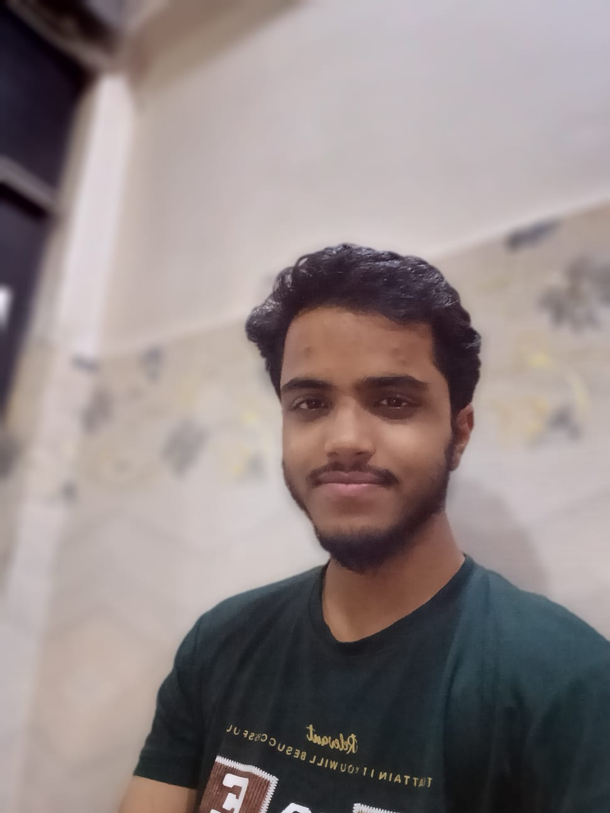

B.Sc. IT Student • Web Developer
Hi, I'm Saad Farooqui
Aspiring MERN Stack Developer
I enjoy building responsive and practical web applications. My strongest foundation is in JavaScript, HTML and CSS, and I am currently improving my skills in React, Node.js, Express.js and MongoDB through hands-on projects.
JavaScript focused
Learning MERN
Open to internships

Learning by building real projects and improving one feature at a time.
About Me
Building my skills through real work
I am a B.Sc. IT student with a strong interest in web development. I started with HTML, CSS and JavaScript and now I am gradually moving deeper into the MERN stack.
I like understanding how features work, solving bugs, improving interfaces and working with projects that have real use cases. I am still learning advanced React and backend concepts, so I focus on building a strong foundation instead of claiming skills I have not mastered yet.
What I focus on
- Clean and responsive user interfaces
- JavaScript problem solving
- Working with frontend and backend APIs
- Debugging and improving existing features
- Git and GitHub based development
Skills
What I know and what I'm learning
I prefer to keep this section honest and show my current level clearly.
Development Tools
MERN Stack
Projects
Things I have worked on
Projects that helped me practice development, debugging and problem solving.
01
Team Project
ClientDesk
A team web application for agencies, freelancers and local retailers. I have worked on inventory-related features, UI improvements, integrations and debugging while learning how a larger MERN project is structured.
02
College Project
EcoLens
An environmental awareness project focused on making air and water quality information easier to understand through a clean interface, educational content and visualizations.
03
JavaScript
Task Manager
A browser-based task manager built using HTML, CSS, JavaScript and LocalStorage.
04
JavaScript
Snake Game
A classic browser game created to practice JavaScript logic, events and DOM updates.
05
Frontend
Spotify Clone
A responsive Spotify-inspired interface created to practice frontend layout and styling.
Contact
Let's connect
I am currently looking for opportunities where I can learn, contribute and grow as a web developer, especially in JavaScript and the MERN stack.